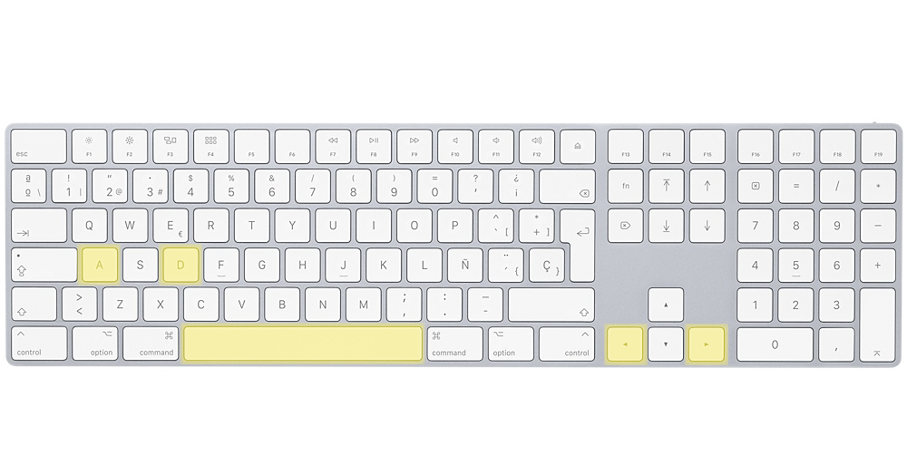

Human population vs Known animal extinctions from 2150 BC to 1975 AD
Human population vs Known animal extinctions from 2150 BC to 1975 AD
Use right and left arrow keys or "a" and "d" to move forward and backward in time
Use space bar to start/stop automatic forward

Population is shown as circles. Circle size relation with population number is shown on the bottom of the page
Mouse pointer can be placed over population circles to display city name and population value
Year beign visualized is shown on the bottom of the page.
The quantity of extinctions will be displayed by continent with color. Green means low extinctions, red means lot of animal extinctions
0 Extictions
180 Extictions
Map can be mooved and zoomed. You can change from plane to globe with the button in the top left corner
CONTINUE